직업상담사-2급 (2010-07-25 기출문제)
1과목: 직업상담학
1. 다음은 직업상담모형 중 어떤 직업상담에 관한 설명인가?
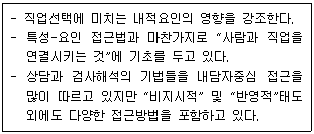
- 포괄적 직업상담
- 정신역동적 직업상담
- 발달적 직업상담
- 행동주의 직업상담
(정답률: 56%)

2. 내담자의 동기와 역할을 사정(assessment)하는데 일반적으로 가장 많이 사용되는 방법은?
- 개인상담
- 자기보고
- 직업상담
- 심리치료
(정답률: 75%)
3. Super의 발달적 직업 상담단계를 바르게 나열한 것 은?
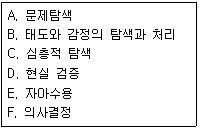
- A→B→C→D→E→F
- A→C→B→D→E→F
- A→C→E→D→B→F
- A→C→D→E→B→F
(정답률: 73%)
4. 다음 중 내담자 중심적 상담자가 심리검사를 사용할 때의 활동원칙과 가장 거리가 먼 것은?
- 검사결과의 해석에 내담자가 참여하도록 한다.
- 검사결과를 전할 때는 명확하게 하기 위해 평가적인 언어를 사용한다.
- 내담자가 알고자 하는 정보와 관련된 검사의 가치와 제한점을 설명한다.
- 검사결과를 입증하기 위한 더 많은 자료가 수집될 때가지는 시험적인 태도로 조심스럽게 제시되어야한다
(정답률: 79%)
5. 정신분석적 상담에서 내담자의 갈등과 방어를 탐색하고 이를 해석해 나가는 과정은?
- 논박
- 훈습
- 행동수정
- 관계형성
(정답률: 76%)
6. 다음 중 진로시간전망 검사지의 사용목적과 가장 거리가 먼 것은?
- 목표설정 촉구하기
- 계획기술 연습하기
- 진로의식 높이기
- 미래직업에 대한 지식 확장하기
(정답률: 68%)
7. Levenson이 제시한 직업상담사의 반윤리적 행동에 해당하는 것은?
- 상담사의 능력 내에서 내담자의 문제를 다룬다.
- 내담자에게 부당한 광고를 하지 않는다.
- 적절한 상담비용을 청구한다.
- 상담사에 대한 내담자의 의존성을 최대화 한다.
(정답률: 82%)
8. Ellis가 제시한 인지적-정서적 상담(RET)과정을 바르게 나열한 것은?
- 사건→신념→결과→논박→효과
- 신념→사건→결과→논박→효과
- 결과→사건→신념→논박→효과
- 논박→사건→신념→결과→효과
(정답률: 73%)
9. 다음 면담에서 인지적 명확성이 부족한 내담자의 유형과 상담자의 개입방법이 바르게 짝지어진 것은?
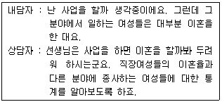
- 구체성의 결여 - 구체화시키기
- 파행적 의사소통 - 저항에 다시 초점 맞추기
- 강박적 사고 - RET 기법
- 원인과 결과 착오 - 논리적 분석
(정답률: 72%)
10. 다음은 행동주의 상담기법 중 무슨 기법에 해당하는가?
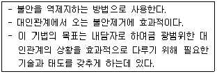
- 모델링
- 주장훈련
- 자기관리프로그램
- 행동계약
(정답률: 70%)
11. 다음 중 특성-요인 직업상담의 과정을 바르게 나열 한 것은?
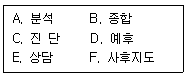
- A→B→C→D→E→F
- C→A→B→D→E→F
- A→B→C→E→D→F
- A→E→C→D→B→F
(정답률: 80%)
12. 직업상담시 내담자의 가족이나 선조들(부모, 조부모 및 친인척)의 직업 특징에 대한 시각적 표상을 얻기 위해 만드는 도표는 무엇인가?
- 기대표
- 생활사
- 제노그램
- 프로파일
(정답률: 87%)
13. 다음 중 상담 과정에서 상담자가 내담자에게 하는 질문에 관한 설명으로 틀린 것은?
- 간접적 질문보다는 직접적 질문이 더 효과적이다.
- 폐쇄적 질문보다는 개방적 질문이 더 효과적이다.
- 이중질문은 상담에서 결코 도움이 되지 않는다.
- “왜”라는 질문은 가능하면 피해야 한다.
(정답률: 72%)
14. 형태주의 상담의 주요 상담과정과 가장 거리가 먼 것은?
- 내담자의 자신에 대한 자각을 증진시키는 것
- 자신의 행동결과를 수용하고 이에 대한 책임감을 증진 시키는 것
- 내담자가 자신의 잠재 능력을 확인하고 실현할 수 있게 하는 것
- 지금-여기에서의 지각과 경험을 내담자와 공유하는 것
(정답률: 43%)
15. Butcher가 제시한 집단직업상담의 3단계를 바르게 나열한 것은?
- 탐색→행동→유지
- 탐색→전환→행동
- 유지→전환→행동
- 전환→탐색→유지
(정답률: 85%)
16. Crites의 직업상담 문제유형 분류 붕 불충족형에 관한 설명으로 옳은 것은?
- 흥미를 느끼는 분야도 없고 적성에 맞는 분야도 없는 사람이다.
- 흥미를 느끼는 분야가 있지만 그 자신의 적성수준보다 낮은 적성을 요구하는 직업을 선택하는 사람이다.
- 가능성이 많아서 흥미를 느끼는 직업들과 적성에 맞는 직업들 사이에서 결정을 내리지 못하는 사람이다.
- 흥미를 느끼는 분야가 있지만 그 분야에 대해 적성을 구지고 잇지 못하는 사람이다.
(정답률: 63%)
17. 직업상담의 중재(intervention)에 관한 단계 중 “6개의 생각하는 모자(six thinking hats)"기법은 무엇을 위한 것인가?
- 직업정보의 수집
- 시간관념의 개선
- 보유기술의 파악
- 의사결정의 촉진
(정답률: 84%)
18. 다음은 상담기법 중 무엇에 관한 설명인가?
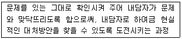
- 자유연상
- 반영
- 직면
- 명료화
(정답률: 88%)
19. 다음은 어떤 상담이론에 관한 설명인가?
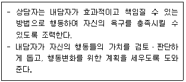
- 실존주의 상담
- 행동주의 상담
- 내담자 중심 상담
- 형태주의 상담
(정답률: 36%)
20. 상담용 직업카드를 만들 때 카드에 들어가야 할 정보로 적합하지 않은 것은?
- 해당 직업부호와 하위 직업명들
- 해당 직업수행에 필요한 교육수준
- 해당 직업을 구성하는 작업들(Tasks)
- 해당 직업의 미래수요와 전망
(정답률: 57%)
2과목: 직업심리학
21. 직무분석에 대한 설명으로 틀린 것은?
- 직무와 관련된 자료는 숙련된 직무분석가에 의하여 다양한 경로를 통해 수집되어야 한다.
- 해야 할 과제, 임무 및 활동 등이 분석에 포함되어야 한다.
- 직무수행을 하는 사람의 지식, 기술 및 능력이 명시되어야 한다.
- 전문가적 직무수행의 요구조건이 명시되어야 한다.
(정답률: 57%)
22. 다음 중 직위분석질문지(PAQ)에 대한 설명으로 틀린 것은?
- 작업자 중심 직무분석의 대표적인 예이다.
- 직무수행에 요구되는 인간의 특성들을 기술하는 데 사용되는 194개의 문항으로 구성되어 있다.
- 직무수행에 관한 6가지 주요 범주는 정보입력, 정신과정, 작업결과, 타인들과의 관계, 직무맥락, 직무요건 등이다.
- 비표준화된 분석도구이다.
(정답률: 79%)
23. 어떤 과제를 수행하는 데 있어서 자신의 능력에 대한 믿음이 과제 시도의 여부와 과제를 어떻게 수행하는지를 결정한다는 Bandura의 이론은?
- 자기통제이론
- 자기판단이론
- 자기개념이론
- 자기효능감이론
(정답률: 83%)
24. Selye가 제시한 스트레스의 일반적응증후군의 단계가 아닌 것은?
- 재발단계(Recurrence Stage)
- 저항단계(Resistance Stage)
- 경계단계(Alarm Stage)
- 탈진단계(Exhaustion Stage)
(정답률: 81%)
25. 다음은 심리검사의 타당도 중 어떤 것을 설명한 것인가?
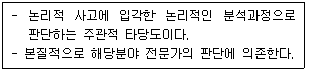
- 내용타당도
- 구성타당도
- 예언타당도
- 동시타당도
(정답률: 65%)
26. 다음 중 종업원의 경력개발 프로그램과 가장 거리가 먼 것은?
- 후견인 제도
- 직무순환
- 훈련 프로그램
- 직무평가
(정답률: 74%)
27. 다음 중 표준점수에 대한 설명으로 옳은 것은?
- 표준점수는 음수(-)값을 가질 수 없다.
- 표준점수는 원점수에서 표준편차를 빼고 평균으로 나눈 값이다.
- T점수의 평균은 50이고, 표준편차는 10 이다
- 표준점수의 분포는 항상 정상분포가 된다.
(정답률: 71%)
28. 직무 스트레스를 조절하는 매개요인에 관한 설명으로 틀린 것은?
- 성격요인으로 A유형과 B유형으로 구분하며 A유형의 사람들은 성취욕구가 높고 더 높은 포부수준을 갖고 있기 때문에 일로부터 스트레스를 느낄 가능성이 적다.
- 내적 통제자보다 외적 통제자들은 자신의 삶에 있어 중요한 사건들이 주로 타인이나 외부에 의해 결정된다고 보기 때문에 스트레스 영향력을 감소시키려는 노력을 하지 않는 편이다.
- 스트레스 자체를 없애기는 어렵기 때문에 스트레스 출처를 예측하는 것이 스트레스를 완화시키는 중요한 역할을 한다.
- 사회적 지원은 스트레스 출처를 약화시키지만 스트레스 출처로부터 야기된 권태감, 직무 불만족 자체를 감소시키는 것은 아니다.
(정답률: 74%)
29. Holland 이론의 6각형 모형에서 서로간의 거리가 가장 가깝고, 유산한 직업성격끼리 짝지은 것은?
- 사회적(S)-진취적(E)-예술적(A)
- 현실적(R)-관습적(C)-사회적(S)
- 관습적(C)-사회적(S) -탐구적(I)
- 탐구적(I)-진취적(E)-사회적(S)
(정답률: 71%)
30. K-WAIS의 동작성 검사에 해당되지 않는 것은?
- 바꿔쓰기
- 토막짜기
- 공통점 찾기
- 빠진 곳 찾기
(정답률: 66%)
31. 다음 중 진로 의사결정 모델(이론)에 해당하는 것은?
- Parsons의 특성-요인이론
- Vroom의 기대이론
- Super의 발달이론
- Krumboltz의 사회학습이론
(정답률: 50%)
32. Lofquist & Dawid의 직업적응이론에서 직업적응방식에 관한 설명으로 틀린 것은?
- 융통성 - 개인이 작업환경과 작업성격 간의 부조화를 참아내는 정도
- 끈기 - 환경이 자신에게 맞지 않아도 개인이 얼마나 오랫동안 견뎌낼 수 있는지의 정도
- 적극성 - 개인이 작업환경을 개인적 방식과 좀 더 조화롭게 만들어가려고 노력하는 정도
- 반응성 - 개인이 작업성격의 변화로 인해 작업환경에 반응하는 정도
(정답률: 68%)
33. 직업발달이론에 관한 설명으로 틀린 것은?
- 특성-요인이론은 Parsons의 직업지도모델에 기초하여 형성되었다.
- Super의 생애발달단계는 환상기 – 잠정기 - 현실기로 구분한다.
- 일을 승화의 개념으로 설명하는 이론은 정신분석이론이다.
- Holland의 직업적 성격유형론에서 중요시하는 개념은 일관도, 일치도, 분화도 등이다.
(정답률: 62%)
34. Holland의 성격유형에 관한 설명으로 틀린 것은?
- 현실적인 사람들은 대인관계에 뛰어나며 외부활동을 선호한다.
- 예술적인 사람들은 창의적이고 심미적이며 예술을 통해 자신을 표현한다.
- 관습적인 사람들은 다소 보수적이며 사무적이고 조직적인 환경을 선호한다.
- 탐구적인 사람들은 추상적이고 분석적이며 과제 지향적이다.
(정답률: 81%)
35. 개인의 적성과 흥미 또는 성격과 직업적 요구와의 차이로 인해 내담자가 직업적응문제를 나타낼 때 이러한 문제해결을 위해 가장 적합한 방법은?
- 스트레스 관리 방안 모색
- 직업전환
- 인간관계 개선 프로그램 제공
- 전근
(정답률: 85%)
36. 다음 중 직업상담에 사용되는 질적 측정도구가 아닌 것은?
- 역할놀이
- 제노그램
- 카드분류
- 욕구 및 근로가치 척도
(정답률: 70%)
37. Roe의 욕구이론에 관한 설명으로 옳은 것은?
- 심리적 에너지가 흥미를 결정하는 중요한 요소라고 본다.
- 청소년기 부모-자녀간의 관계에서 생긴 욕구가 직업선택에 영향을 미친다는 이론이다.
- 부모의 사랑을 제대로 받지 못하고 거부적인 분위기에서 성장한 사람은 다른 사람들과 함께 일하고 접촉하는 서비스 직종의 직업을 선호한다.
- Roe는 직업군을 10가지로 분류했다.
(정답률: 56%)
38. 일반적성검사(GATB)에서 측정하는 직업적성이 아닌 것은?
- 손가락 정교성
- 언어적성
- 사무지각
- 과학적성
(정답률: 69%)
39. 직장에서 역할관련 갈등으로 인하여 받는 스트레스는 스트레스의 원인 중 어디에 속하는 것인가?
- 직무관련 스트레스원
- 개인관련 스트레스원
- 조직관련 스트레스원
- 물리적 환경관련 스트레스원
(정답률: 62%)
40. 문항 난이도에 관한 설명으로 틀린 것은?
- 특정 문항을 맞춘 사람들의 비율로서 0.00에서 1.00 의 값을 갖는다.
- 문항이 어려울수록 검사점수의 변량이 낮아져서 검사의 신뢰도가 낮아진다.
- 문항의 난이도가 0.50일 때 검사점수의 분산도가 최대가 된다
- 문항 난이도 계수 값이 높을수록 어려운 문제이다.
(정답률: 65%)
3과목: 직업정보론
41. 산업 · 직업별 고용구조 조사에 관한 설명으로 옳은 것은?
- 2002년부터 조사하기 시작하였다.
- 전국의 약 7만 5천개의 사업체를 대상으로 하는 조사이다.
- 조사대상자에 대한 조사방법은 조사원이 질문하고 응답을 조사원이 기록하는 면접타계식을 원칙으로 한다.
- 조사를 위한 직업분류는 한국표준직업분류의 체계를 따른다.
(정답률: 50%)
42. 직업정보 시스템의 일반적인 정보관리 순서를 바르게 나열한 것은?
- 수집-분석-가공-체계화-제공-평가
- 수집-가공-분석-제공-평가-체계화
- 수집-분석-평가-가공-체계화-제공
- 수집- 분석-체계화-제공-가공-평가
(정답률: 77%)
43. 다음의 한국직업정보시스템에서 제공하는 학과정보 중 공학계열에 해당하지 않는 것은?
- 조경학과
- 안경광학과
- 교통공학과
- 임산공학과
(정답률: 46%)
44. 한국고용직업분류(KECO)에 대한 설명으로 틀린 것은?(관련 규정 개정전 문제로 여기서는 기존 정답인 1번을 누르면 정답 처리됩니다. 자세한 내용은 해설을 참고하세요.)(오류 신고가 접수된 문제입니다. 반드시 정답과 해설을 확인하시기 바랍니다.)
- 10진법 중심의 분류이다.
- 직능유형(skill type) 중심이다.
- 대분류보다는 중분류 중심체계이다.
- 직업분류의 기본 원칙인 포괄성과 배타성을 고려하여 분류하였다.
(정답률: 63%)
45. 직업정보 분석시 유의점으로 틀린 것은?
- 동일한 정보에 대해서는 한 가지 측면으로 분석한다.
- 전문적인 시각에서 분석한다.
- 분석과 해석은 원자료의 생산일, 자료표집방법 등을 검토하여야 한다.
- 직업정보원과 제공원에 대해 제시한다.
(정답률: 82%)
46. 인간이 복잡한 정보에 접근하게 되는 구조에 근거를 둔 이론으로 직업선택결정 단계를 전제단계, 계획단계, 인지부조화단계로 구분한 직업결정모형은?
- 타이드만과 오하라(Tiedman &O'Hara)의 모형
- 힐튼(Hilton)의 모형
- 브룸(Vroom)의 모형
- 수(Hsu)의 모형
(정답률: 52%)
47. Q-Net에서 제공하는 자격정보가 아닌 것은?
- 사업 내 자격 종목별 상세정보
- 국가기술자격 종목별 상세정보
- 등록민간자격 종목별 상세정보
- 외국자격 종목별 상세정보
(정답률: 55%)
48. 다음 중 응시자격의 제한이 없는 국가기술자격 종목이 아닌 것은?(2010년 12월 관련 규정 개정으로 응시 자격이 제한없음으로 변경되었습니다. 기존 정답은 2번입니다. 여기서는 2번을 누르면 정답 처리 됩니다.)
- 직업상담사 2급
- 컨벤션기획사 2급
- 사회조사분석사 2급
- 소비자전문상담사 2급
(정답률: 80%)
49. 한국표준직업분류(2007)의 목적 및 활용에 해당하지 않는 것은?
- 취업알선을 위한 구인. 구직 안내 기준
- 직종별 급여 및 수당지급 결정기준
- 실직자의 직업훈련을 지원하기 위한 기준
- 산재보험률, 생명보험률 또는 교통사고 보상액 등의 결정 기준
(정답률: 26%)
50. 다음은 국가기술자격 어떤 등급의 검정기준인가?
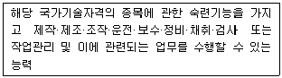
- 기능장
- 기사
- 산업기사
- 기능사
(정답률: 61%)
51. 한국표준산업분류(2008)에서 산업분류의 적용원칙에 관한 설명으로 틀린 것은?
- 생산단위는 산출물뿐만 아니라 투입물과 생산공정 등을 함께 고려하여 그들의 활동을 가장 정확하게 설명된 항목에 분류해야 한다.
- 복합적인 활동단위는 우선적으로 최상급 분류단계(대분류)를 정확히 결정하고, 순차적으로 중· 소· 세· 세세분류 단계 항목을 결정하여야 한다.
- 수수료 또는 계약에 의하여 활동을 수행하는 단위는 자기계정과 자기책임 하에서 생산하는 단의와 다른 항목에 분류되어야 한다.
- ‘공공행정 및 국방, 사회보장사무’ 이외의 다른 산업활동을 수행하는 정부기관은 그 활동의 성질에 따라 분류하여야 한다.
(정답률: 75%)
52. 다음 중 해당직업에서 업무를 수행하는 데 있어서 필요한 능력의 상대적 중요성(적합성)정도를 직업간 비교가 가능한 100점 만점으로 제공하는 직업정보원은?
- 한국직업사전
- 한국직업정보시스템
- 한국직업전망
- 신생 및 이색직업
(정답률: 58%)
53. 한국직업전망의 구성체계에 관한 설명으로 틀린 것은?(관련 규정 개정으로 정답이 없습니다. 여기서는 기존정답인 3번을 누르면 정답 처리 됩니다.)
- 적성과 흥미는 해당 직업에 종사하는데 유리한 성격, 흥미, 적성 등을 수록하였다.
- 전공분포와 연령분포, 학력수준은 백분율로 제시하였다.
- 수입은 해당 직업종사자의 월평균임금, 상위 25%등 2개 영역으로 구분하여 제시하였다.
- 직업전망은 향후 5년간의 고용전망을 중심으로 기술 하였다.
(정답률: 81%)
54. 한국표준직업분류(2007)상 직업 활동에 해당하는 경우는?
- 명확한 주기는 없으나 계속적으로 동일한 형태의 일을 하여 수입이 있는 경우
- 연금법, 생활보호법, 국민연금법 및 고용보험법 등의 사회보자에 의한 수입이 있는 경우
- 이자, 주식배당, 임대료(전세금, 월세금) 등과 같은 자산 수입이 있는 경우
- 예금인출, 보험금 수취, 차용 또는 토지나 금융자산을 매각하여 수입이 있는 경우
(정답률: 74%)
55. 신규취업자의 노동력 수급상황, 채용, 구인 및 이직상황은 어떤 고용정보에 속하는가?
- 경제 및 산업동향에 관한 정보
- 노동시장, 고용 및 실업동향에 관한 정보
- 근로조건에 관한 정보
- 고용관리에 관한 정보
(정답률: 73%)
56. 워크넷에서 제공하는 청소년 직업흥미검사의 하위척도가 아닌 것은?
- 활동
- 자신감
- 직업
- 봉사
(정답률: 63%)
57. 한국표준산업분류(2008)의 산업분류기준에 해당되지 않는 것은?
- 투입물의 특성
- 생산활동의 일반적인 결합형태
- 생산된 재화 또는 제공된 서비스의 특징
- 생산단위가 수행하는 산업활동의 차별성
(정답률: 65%)
58. 한국표준산업분류(2008)의 통계단위는 생산활동과 장소의 동질성의 차이에 따라 다음과 같이 구분된다. ( )안에 들어갈 가장 알맞은 것은?
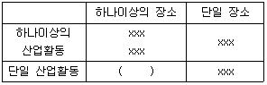
- 기업집단
- 지역단위
- 기업체단위
- 활동유형단위
(정답률: 77%)
59. 고용노동부에서 실시하고 있는 사업체 임금근로시간 조사에 관한 설명으로 틀린 것은?(관련 규정 변경으로 정답이 없습니다. 여기서는 기존 정답인 4번을 누르면 정답 처리 됩니다.)
- 고용, 임금 및 근로시간에 관한 사항을 매분기 조사 하여 거시경제지표 산정 및 임금· 고용 등 노동정책의 기초자료로 제공한다.
- 근로자수, 근로시간, 임금의 변동사유에 대해서도 조사한다.
- 조사하는 임금총액은 세금공제전의 임금총액을 의미한다.
- 고용계약기간에 따라 상용근로자, 임시근로자, 일용근로자로 종사상 지위를 분류하고 인턴, 산업기능요원은 근로자 수에 포함하지 않는다.
(정답률: 75%)
60. 한국직업사전에서 수록하고 있는 직업정보의 주요내용에 관한 설명으로 틀린 것은?(관련 규정 변경으로 정답이 없습니다. 여기서는 기존 정답인 4번을 누르면 정답 처리 됩니다.)
- 직업코드 – 한국표준직업분류의 세분류 체계를 기준으로 4자리의 숫자로 표기된다.
- 본 직업명칭 – 산업현장에서 일반적으로 사용되고 있으며 해당 직업으로 알려진 명칭, 혹은 그 직무에 통상적으로 호칭되는 것을 선정하였다.
- 직무개요 – 주로 직무담당자의 활동, 활동의 대상 및 목적, 사용하는 기계, 설비 및 작업보조물등을 간략히 포함하였다.
- 수행직무 – 직무담당자가 직무의 목적을 완수하기 위하여 수행하는 구체적인 작업내용을 작업의 중요도가 높은 순서를 원칙으로 기술하였다.
(정답률: 72%)
4과목: 노동시장론
61. 실업급여의 효과에 대한 설명으로 가장 적합한 것은?
- 노동시간을 단축시키고 경제활동참가도 감소시킨다.
- 노동시간을 늘리고 경제활동참가도 증대시킨다.
- 노동시간의 증 · 감은 불분명하지만 경제 활동참가는 증대시킨다.
- 노동시간, 경제활동참가 모두 불분명하다.
(정답률: 73%)
62. 다음 중 노동조합의 조직력을 가장 강화시킬 수 있는 Shop제도는?
- 클로즈드 숍(Closed shop)
- 에이전시 숍(Agency shop)
- 오픈 숍(Open shop)
- 메이트넌스 숍(Maintenance shop)
(정답률: 77%)
63. 기업 내부노동시장의 형성요인이 아닌 것은?
- 노동조합의 존재
- 기업 특수적 숙련기능
- 직장 내 훈련
- 노동관련 관습
(정답률: 62%)
64. 실업정책을 크게 고용안정정책, 고용창출정책, 사회안전망 정책으로 구분할 때 사회안전망 정책에 해당하는 것은?
- 실업급여
- 취업알선 등 고용서비스
- 창업을 위한 인프라 구축
- 직업훈련의 효율성 제고
(정답률: 71%)
65. 다음중 경기적 실업에 대한 대책으로 가장 적합한 것은?
- 지역 간 이동 촉진
- 유효수요의 확대
- 기업의 퇴직자 취업알선
- 구인. 구직에 대한 전산망 확대
(정답률: 76%)
66. 다음 중 실업률에 관한 설명으로 틀린 것은?
- 다른 조건이 일정한 경우 실망노동자 효과가 발생하면 실업률은 줄어든다.
- 다른 조건이 일정한 경우 부가노동자 효과가 발생하면 실업률은 늘어난다.
- 실망노동자 효과는 실업률이 낮은 경우에 더 크게 나타난다.
- 실업률은 실업자 수를 경제활동인구로 나눈 후 이에 100을 곱하여 구한다.
(정답률: 60%)
67. 후방굴절형 노동공급곡선에 대한 설명으로 옳은 것은?
- 임금이 일정 수준 이상으로 오르면 임금이 오를수록 노동공급이 감소하게 된다.
- 임금변화의 대체효과가 소득효과보다 클 때 임금과 노동시간 사이에 부의 관계가 나타나는 것을 말한다.
- 노동공급의 변화율을 노동가격 변화율로 나눈 값이 점차 감소하는 현상을 그래프로 나타낸 것을 말한다.
- 인구가 일정 규모 이상이 되면 임금이 오를수록 노동공급이 감소하는 것을 그래프로 나타낸 것을 말한다.
(정답률: 53%)
68. 보상적인 임금격차이론에 대한 설명으로 틀린 것은?
- 험한 직업에는 높은 임금이 지급 되는 것이 일반적이다.
- 정부의 안전에 관한 규제가 항상 근로자에게 이익이 되는 것은 아니다.
- 보상적인 임금격차가 적절하게 기능한다면 위험하고 더럽고 어려운(3D) 업종의 구인난은 해소될 수 있다.
- 기업의 산재위험에 관한 도덕적 해이는 산재보험에 의해 치유될 수 있다.
(정답률: 68%)
69. 다음 중 경쟁노동시장모형의 가정으로 틀린 것은?
- 노동자 개인이나 개별고용주는 시장임금에 아무런 영향력을 행사할 수 없다
- 노동자의 단결조직과 사용자의 단결조직은 없다.
- 모든 직무의 공석은 내부노동시장을 통해서 채워진다.
- 노동자와 고용주는 완전정보를 갖는다.
(정답률: 59%)
70. 직능급 임금체계의 특징에 관한 설명으로 옳은 것 은?
- 조직의 안정화에 따른 위계질서 확립이 용이하다.
- 직무에 상응하는 임금을 지급한다.
- 학력 · 직종에 관계없이 능력에 따라 임금을 지급한 다.
- 무사안일주의 및 적당주의를 초래할 수 있다.
(정답률: 71%)
71. 생산요소에 대한 수요를 파생수요(Derived Demand)라 부르는 이유로 가장 적합한 것은?
- 생산요소의 수요곡선은 이윤극대화에서 파생되기 때문이다.
- 정부의 요소수요는 민간의 수요를 보완하기 때문이다.
- 생산요소에 대한 수요는 그들이 생산한 생산물에 대한 수요에 의존하기 때문입니다.
- 생산자들은 저렴한 생산요소로 늘 대체하기 때문이다.
(정답률: 66%)
72. 다음중 노동공급의 결정요인이 아닌 것은?
- 인구의 규모와 구조
- 노동생산성의 변화
- 임금지불방식
- 동기부여와 사기
(정답률: 30%)
73. 다음 중 분단노동시장가설이 암시하는 정책적 시사점과 가장 거리가 먼 것은?
- 노동시장의 공급측면에 대한 정부개입 또는 지원을 지나치게 강조하는 것에 대해 부정적이다.
- 공공적인 고용기회의 확대나 임금보조, 차별대우 철폐를 주장한다.
- 외부노동시장의 중요성을 강조한다.
- 노동의 인간화를 도모하기 위한 의식적인 정책노력이 필요하다.
(정답률: 63%)
74. 다음 힉스의 교섭모형과 기대파업기간에 관한 설명으로 틀린 것은?
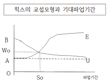
- B에서의 우하향 곡선이 노동조합의 저항곡선이다.
- So기간의 파업을 통해 교차점에 도달했으며 이때 결정된 임금률이 Wo로 됨을 보여준다.
- 사용자는 노동조합이 Wo보다 더 높은 임금을 요구하면 파업을 두려워하여 그 요구를 수용할 것이다.
- 노사가 So에서 파업을 중단하는 것이 이익이 된다는 것을 안다면 Wo 임금수준에서 교섭을 타결할 것이다.
(정답률: 74%)
75. 생산물시장과 노동시장이 완전경쟁일 때 노동의 한계생산량이 10개이고 생산물 가격이 500원이며 시간당 임금이 4,000원이라면 이윤을 극대화하기 위한 기업의 반응으로 옳은 것은?
- 임금을 올린다.
- 노동을 자본으로 대체한다.
- 노동의 고용량을 증대시킨다.
- 고용량을 줄이고 생산을 감축한다.
(정답률: 70%)
76. 다음 중 노사관계의 3주체(Tripartite)를 바르게 짝지은 것은?
- 노동자-사용자-정부
- 노동자-사용자-국회
- 노동자-사용자-정당
- 노동자-사용자-사회단체
(정답률: 82%)
77. 특별한 기능이나 직업 또는 숙련도에 따라 조직된 배타적인 노동조합은?
- 산업별 노동조합
- 일반노동조합
- 직종별 노동조합
- 기업별 노동조합
(정답률: 69%)
78. 비정규직 근로자의 증가 이유만으로 바르게 짝지어진 것은?
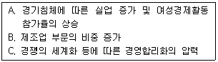
- A, B
- A, C
- B. C
- A, B, C
(정답률: 58%)
79. 효율임금이론에서 고임금이 고생산성을 가져오는 원인에 관한 설명으로 틀린 것은?
- 고임금은 노동자의 직장상실비용을 증대시켜 노동자로 하여금 열심히 일하게 한다.
- 대규모 사업장에서는 통제상실을 사전에 방지하는 차원에서 고임금을 지불하여 노동자를 열심히 일하도록 유도할 수 있다.
- 고임금은 노동자의 사직을 감소시켜 신규노동자의 채용 및 훈련비용을 감소시킨다.
- 균형임금을 지불하여 경제 전반적으로 동일노동 · 동일임금이 달성되도록 한다.
(정답률: 71%)
80. 다음 중 노동조합이 임금협상에 가장 유리한 경우의 노동수요의 탄력성은?
- 0
- 1
- 5
- 10
(정답률: 63%)
5과목: 노동관계법규
81. 고용정책기본법상 고용정책심의회에 관한 설명으로 틀린 것은?
- 고용정책심의회는 위원장 1인을 포함한 30인 이내의 위원으로 구성한다.
- 고용정책심의회 위원장은 고용노동부차관이 된다.
- 고용정책심의회 회의는 재적위원 과반수의 출석으로 개의하고 출석위원 과반수의 찬성으로 의결한다.
- 고용정책심의회 위원의 임기는 원칙적으로 2년으로 한다.
(정답률: 65%)
82. 교용보험법령상 근로자수강지원금의 지원수준을 높게 정할 수 있는 대상자로 옳은 것은?
- 일용근로자
- 40세 이상인 자
- 우선지원대상기업에 고용된 자
- 이직 예정자로서 훈련 중이거나 훈련 수료 후 1개월 이내에 이직된 자
(정답률: 44%)
83. 남녀고용평등과 일 · 가정 양립 지원에 관한 법령상전자문서로 작성 · 보존할 수 있는 서류가 아닌 것은?
- 직장 내 성희롱 예방 교육을 하였음을 확인할 수 있는 서류
- 성희롱 행위자에 대한 징계 등 조치에 관한 서류
- 육아휴직의 신청 및 허용에 관한 서류
- 적극적 고용개선조치 시행계획 및 그 이행실적에 관한 서류
(정답률: 51%)
84. 고용정책기본법상 고용노동부장관이 실시할 수 있는 실업대책사업에 해당되지 않는 것은?
- 고용촉진과 관련된 사업을 하는 자에 대한 대부(貸付)
- 실업의 예방, 실업자의 재취업 촉진, 그 밖에 고용안정을 위한 사업을 하는 자에 대한 지원
- 고령자에 대한 공공근로사업
- 실업자에 대한 생계비, 의료비(가족의 의료비 포함) 주택전세자금 및 창업점포임대 등의 지원
(정답률: 47%)
85. 직업안정법령상 직업정보제공사업자의 준수해야 하는 사항이 아닌 것은?
- 직업정보제공매체 또는 직업정보제공사업의 광고문에 ‘(무료)취업상담’,‘취업추천’,‘취업지원’ 등의 표현을 사용하지 아니할 것
- 직업정보제공매체에 부여받은 신고번호를 표시하지 아니할 것
- 직업정보제공매체의 구인 · 구직의 광고에 직업정보 제공사업자의 주소 또는 전화번호는 기재하지 아니할 것
- 구직자의 이력서 발송을 대행하거나 구직자에게 취업추천서를 발부하지 아니할 것
(정답률: 52%)
86. 직업안정법규상 국외 공급 근로자의 보호 및 국외 근로자공급사업의 관리에 관한 설명으로 틀린 것은?
- 공급국가로부터 취업자격을 취득한 근로자만을 공급할 것
- 국외의 임금수준 등을 고려하여 공급 근로자에게 적정임금을 보장할 것
- 공급 근로자의 출국일자, 국외 취업기간, 현 근무처 및 귀국일자 등을 기록한 명부를 적성·관리할 것
- 임금은 매월 1회 이상 일정한 기일을 정하여 통화로 직접 해당 근로자에게 그 전액을 지급할 것
(정답률: 59%)
87. 근로기준법상 근로시간과 휴게기간에 관한 설명으로 틀린 것은?
- 1주간의 근로시간은 휴게시간을 제외하고 40시간을 초과할 수 없다.
- 1일의 근로시간은 휴게시간을 제외하고 8시간을 초과할 수 없다.
- 사용자는 근로시간이 4시간인 경우에는 30분 이상, 8시간인 경우에는 1시간 이상의 휴게시간을 근로시간이후에 주어야 한다.
- 휴게시간은 근로자가 자유롭게 이용할 수 있다.
(정답률: 66%)
88. 근로기준법상 취업규칙에 관한 설명으로 틀린 것은?
- 상시 10명 이상의 근로자를 사용하는 사용자는 취업규칙을 작성하여 고용노동부장관에게 신고하여야 한다.
- 사용자는 취업규칙을 근로자에게 불리하게 변경하는 경우에는 해당 사업 또는 사업장 근로자의 과반수의 의견을 들어야 한다.
- 취업규칙에서 근로자에 대하여 감급(減給)의 제재를 정할 경우에 그 감액은 1회의 금액이 평균임금의 1일분의 2분의 1을, 총액이 1임금지급기의 임금총액의 10분의 1을 초과하지 못한다.
- 취업규칙에서 정한 기준에 미달하는 근로조건을 정한 근로계약은 그 부분에 관하여는 무효로 한다. 이 경우 무효로 된 부분은 취업규칙에 정한 기준에 따른다.
(정답률: 53%)
89. 근로자직업능력개발법상 근로자 직업능력개발훈련이 중요시되어야 할 대상이 아닌 것은?
- 제조업에서 사무직으로 종사하는 근로자
- 제대군인 및 전역예정자
- 여성근로자
- 고령자. 장애인
(정답률: 73%)
90. 다음 ( )안에 들어갈 가장 알맞은 것은?
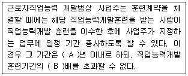
- A-3, B-2
- A-3, B-3
- A-5, B-2
- A-5, B-3
(정답률: 73%)
91. 다음 ( ) 안에 들어갈 가장 알맞은 것은?
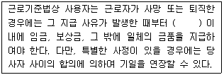
- 14일
- 30일
- 60일
- 90일
(정답률: 68%)
92. 고용보험법상 고용보험 피보험자격의 취득일 · 상실일에 관한 설명으로 옳은 것은?
- 고용보험의 적용제외 근로자이었던 자가 고용보험법의 적용을 받게 된 경우에는 그 적용을 받게 된 날의 다음 날에 피보험자격을 취득한 것으로 본다.
- 피보험자가 고용보험의 적용제외 근로자에 해당하게 된 경우에는 그 적용제외 대상자가 된 날에 피보험 자격을 상실한다.
- 보험관계 성립일 전에 고용된 근로자의 경우에는 고용된 날에 피보험자격을 취득한 것으로 본다.
- 피보험자가 사망한 경우에는 사망한 날에 피보험자격을 상실한다.
(정답률: 53%)
93. 고용보험법상 취업촉진수당이 아닌 것은?
- 이주비
- 직업능력개발 수당
- 조기재취업 수당
- 구직급여
(정답률: 69%)
94. 헌법상 노동 3권에 해당되지 않는 것은?
- 단체교섭권
- 평등권
- 단결권
- 단체행동권
(정답률: 76%)
95. 고용상 연령차별금지 및 고령자고용촉진에 관한 법률상 정년에 관한 설명으로 틀린 것은?(관련 규정 변경으로 정답이 없습니다. 여기서는 기존 정답인 4번을 누르면 정답 처리 됩니다.)
- 사업주가 근로자의 정년을 정하는 경우에는 그 정년이 60세 이상이 되도록 노력하여야 한다.
- 고용노동부장관은 대통령령으로 정하는 일정 수 이상의 근로자를 사용하는 사업주로서 정년을 현저히 낮게 정한 사업주에 대하여 정년의 연장을 권고할 수 있다.
- 사업주는 정년에 도달한 자가 그 사업장에 다시 취업하기를 희망할 때 그 직무수행능력에 맞는 직종에 재고용하도록 노력하여야 한다.
- 사업주는 고령자인 정년퇴직자를 재고용할 때 당사자 간의 합의에 의하여 근로기준법에 따른 퇴직금과 연차유급 휴가일수 계산을 위한 계속근로기간을 산정할 때 종전의 근로기간을 제외할 수 있으나 임금의 결정은 종전과 달리할 수 없다.
(정답률: 79%)
96. 남여고용평등과 일 · 가정 양립 지원에 관한 법률상 육아휴직에 관한 설명으로 옳은 것은?(관련 규정 개정전 문제로 여기서는 기존 정답인 4번을 누르면 정답 처리됩니다. 자세한 내용은 해설을 참고하세요.)
- 육아휴직의 기간은 2년 이내로 한다.
- 사업주는 사업을 계속할 수 없는 경우에도 육아휴직 기간에는 그 근로자를 해고 하지 못한다.
- 육아휴직 기간은 근속기간에 포함하지 않는다.
- 사업주는 휴직개시예정일의 전날까지 해당 사업에서 계속 근로한 기간이 1년 미만인 근로자에 대해서는 육아 휴직을 허용하지 아니할 수 있다.
(정답률: 79%)
97. 근로자직업능력개발법령상 훈련의 목적에 따른 직업능력개발훈련에 해당하지 않는 것은?
- 양성훈련
- 향상훈련
- 현장훈련
- 전직훈련
(정답률: 74%)
98. 고용상 연령차별금지 및 고령자고용촉진에 관한 법률상 사업주의 책무가 아닌 것은?
- 고령자 고용촉진 대책의 수립 · 시행
- 연령을 이유로 하는 고용차별 해소
- 고령자에게 그 능력에 맞는 고용 기회 제공
- 정년연장 등의 방법으로 고령자의 고용 확대
(정답률: 69%)
99. 고용상 연령차별금지 및 고령자고용촉진에 관한 법령상 부동산 및 임대업의 고령자 기준고용률은?
- 상시 근로자수의 100분의 1
- 상시 근로자수의 100분의 3
- 상시 근로자수의 100분의 6
- 상시 근로자수의 100분의 7
(정답률: 73%)
100. 남녀고용평등과 일 · 가정 양립 지원에 관한 법률상 직장 내 성희롱에 관한 설명으로 틀린 것은?(관련 규정 개정전 문제로 여기서는 기존 정답인 4번을 누르면 정답 처리됩니다. 자세한 내용은 해설을 참고하세요.)
- 사업주는 직장 내 성희롱 예방을 위한 교육은 연 1회 이상 하여야 한다.
- 직장 내 성희롱 예방 교육은 사업의 규모나 특성 등을 고려하여 직원연수 · 조회 · 회의, 인터넷 등 정보통신망을 이용한 사이버교육 등을 통하여 실시할 수 있다.
- 상시 10명 미만의 근로자를 고용하는 사업의 사업주는 홍보물을 게시하거나 배포하는 방법으로 직장 내 성희롱 예방교육을 할 수 있다.
- 사업주는 고객 등 업무와 밀접한 관련이 있는 자가 업무수행과정에서 성적인 언동 등을 통하여 근로자에게 성적 굴욕감 또는 혐오감 등을 느끼게 하여 해당 근로자가 그로 인한 고충 해소를 요청할 경우 배치전환 등의 조치를 취해야 한다.
(정답률: 73%)